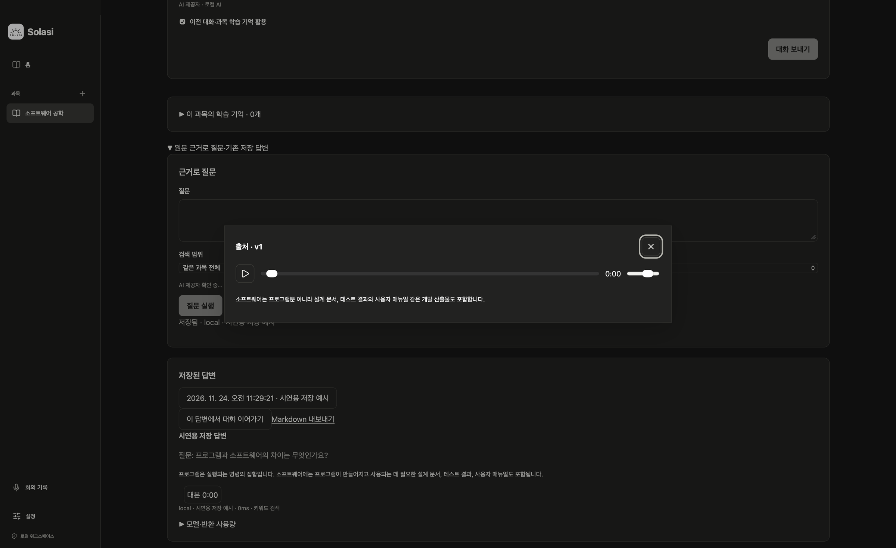

Android 태블릿
소개 보기Android 9 이상, ARM64 v3 개발 프리뷰
Android APK 다운로드Android 설치 방법
- 태블릿에서 APK를 다운로드하고 파일을 엽니다.
- Android가 요청하면 해당 설치 출처를 허용하고 설치를 확인합니다.
- Solasi가 새 APK를 받으면 설정 → Android 업데이트 → 업데이트 설치에서 적용합니다.
수업 기록

강의 PDF에 펜으로 쓰고 중요한 줄에 형광펜을 긋습니다. 이해가 안 된 대목은 그 쪽에 메모해 둡니다.
데스크톱에서는 강의 녹음을 대본으로 옮깁니다. 문장을 고르면 그 구간의 원음을 들으며 잘못 적힌 단어를 고칠 수 있습니다.
데스크톱의 복습 기능
기억나는 단어를 입력하면 같은 과목의 자료와 확정된 대본, 메모에서 관련 대목을 찾습니다.
오늘 수업이나 과목 전체를 골라 질문하세요. 답변에 붙은 출처를 열면 해당 PDF 쪽이나 강의 대본으로 돌아갑니다.
긴 강의는 요약으로 먼저 훑어봅니다. 더 읽고 싶은 부분은 연결된 원문에서 앞뒤 설명까지 확인합니다.
수업 자료로 만든 문제를 풀고, 답의 근거를 읽으며 어느 대목을 다시 공부할지 정합니다.
대본은 텍스트나 마크다운으로, 요약은 마크다운으로 저장해 다른 문서에서도 이어 쓸 수 있습니다.
소프트웨어 공학 · Mac 복습 예시
1장 16쪽을 읽다가 “프로그램과 소프트웨어의 차이는 무엇인가요?”라고 물었습니다. 앱에서 답변의 ‘대본 0:00’을 선택하면 설계 문서와 테스트 결과를 예로 든 강의 대목을 원음으로 다시 들을 수 있습니다.
2~3분 발표 대본 읽기
과목에서 강의 PDF를 열면 필기 도구와 페이지 메모를 함께 볼 수 있습니다.
‘필기만’을 눌러 PDF를 넓게 펼치고, 펜과 형광펜으로 중요한 대목에 표시합니다.
Mac에서 강의 기록을 열어 그날 녹음한 원음을 다시 듣습니다.
‘대본’ 탭에서 문장을 고르고 ‘선택 구간 듣기’를 누릅니다. 원음을 들으며 잘못 옮겨진 단어를 고칠 수 있습니다.
수업 기록은 각 기기에 저장됩니다. 데스크톱에서 외부 AI를 선택하면 질문과 관련 자료가 해당 서비스로 전송됩니다.
기기별 설치 파일